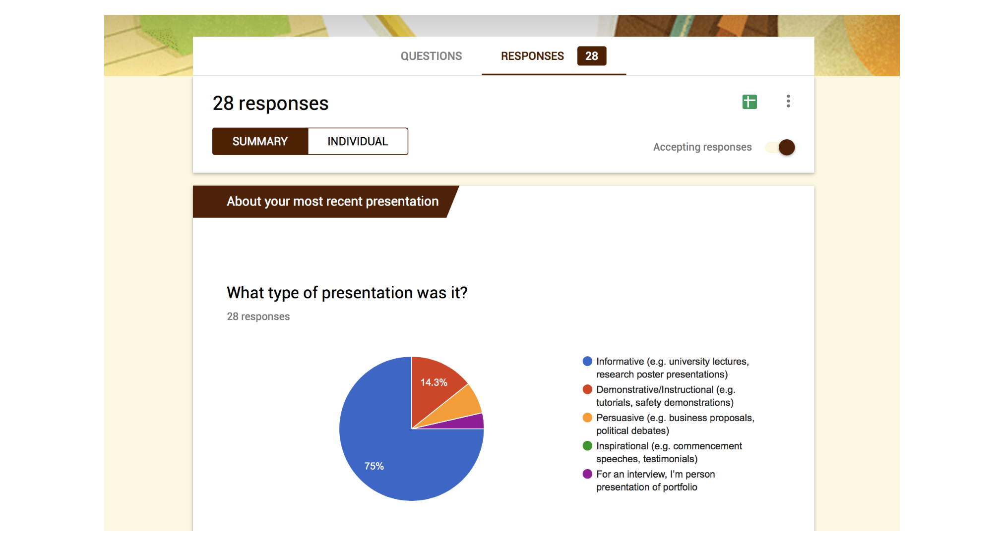
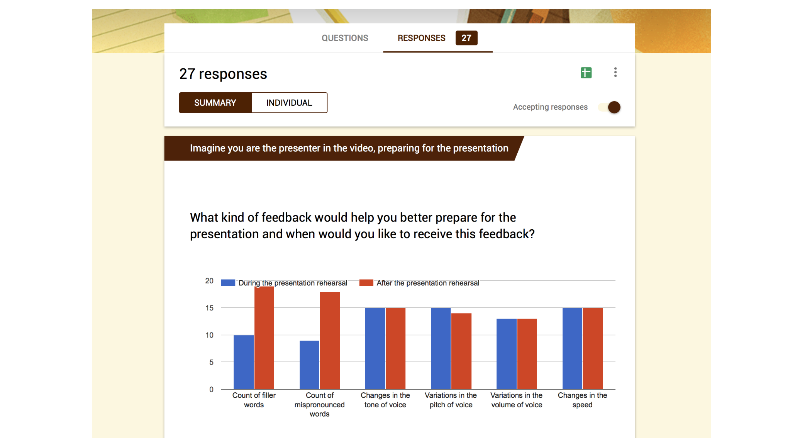
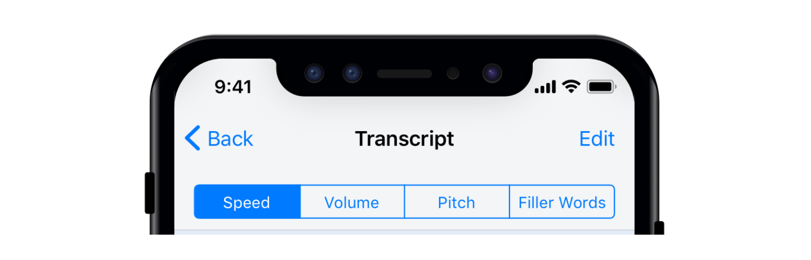
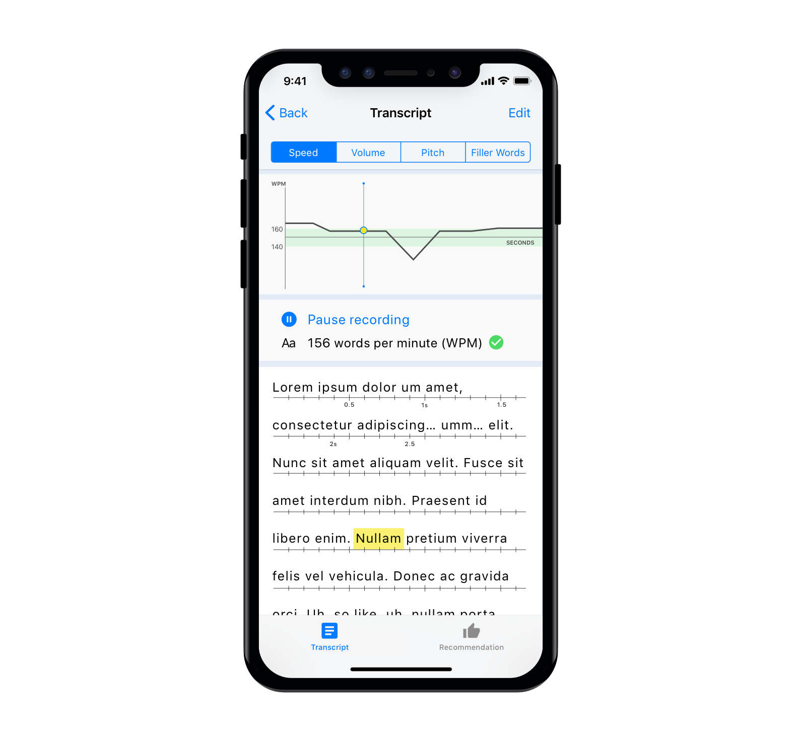
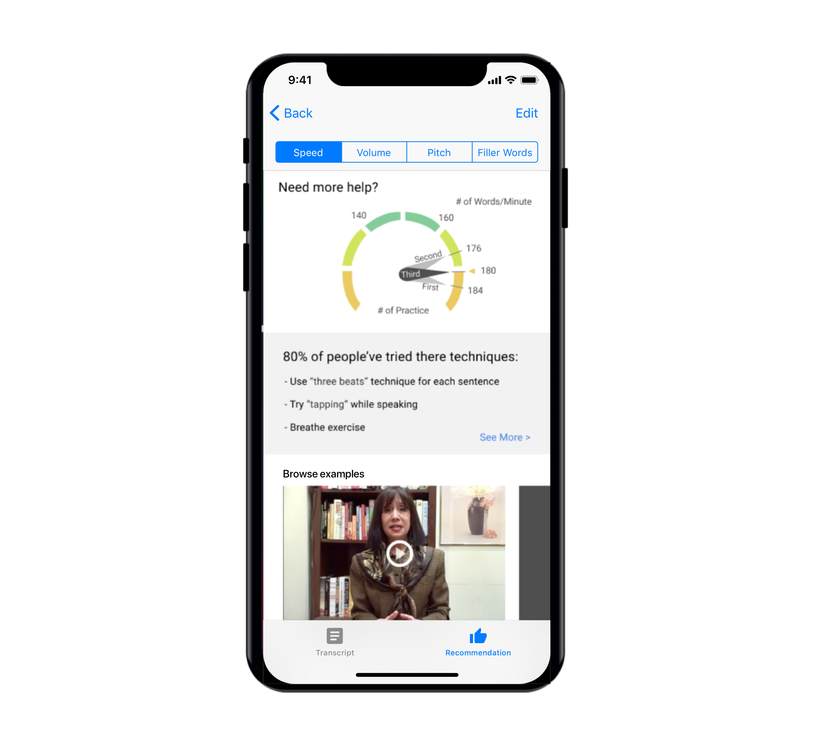

A Personal Informatics group project that took place over a span of 3 months (Jan—Apr 2018). The project demonstrates knowledge in understanding and application of UX research methods and iteration of designs through informed decisions. Special focuses were placed on formulation of accurate measurement strategies and the depiction of the data to promote behavioral change(s).
Our project targets informational public speaking by focusing on the speech aspect of the presentation during individualized practices as we found that users lack the time and resources necessary to practice such presentations. Through this proposed system, we focused on improving 4 basic fundamental speech elements — volume, speed, filler words/ pauses, and tone of voice.
“I practiced at home. Very informally.”
"I start practicing just one hour before the presentation."
"I just read it, and rehearsed in my head."
Initial survey to learn about people's behavior and attitudes when preparing for their formal presentations. Primary purpose of this survey is to uncover pain points during presentation practices and areas of opportunities in order to define the scope of the project.
Secondary survey conducted after narrowing down the scope of the project to individualized practices of informational presentations. We wanted to learn what the best way(s) to provide feedback during and after practices are.
From a couple interviews, surveys, and online forums, we found the following—
A list of design objectives
Provides portability and flexibility to allow users to practice anytime, anywhere. Our system leverages current technological features and abilites such as the usage of voice UI and natural language processing.
Easily dissect and identify areas for improvement. Allows for users to practice and work on their presentation skills step by step without getting overwhelmed. The system looks to train the user's "muscle memory" just like one would when learning to play basketball — dribble, pass, shoot, etc
The app measures the following—
Provides systematic guides and recommendations to each speech element to practice and master one aspect at a time. No longer does the user have to rely soley on audio replays or a friend to provide feedback.
Shows progress over time, provides helpful and actionable references/ examples along with tips and techniques. This allows users to clearly identify and break bad habits, some of which they might not even have been aware of prior to using Speakeasy.
Overview of the system and page flow. The goal is to provide an intuitive experience without adding additional cognitive load to the already stressful situation of preparing for a presentation.
With more time, I would have loved to—